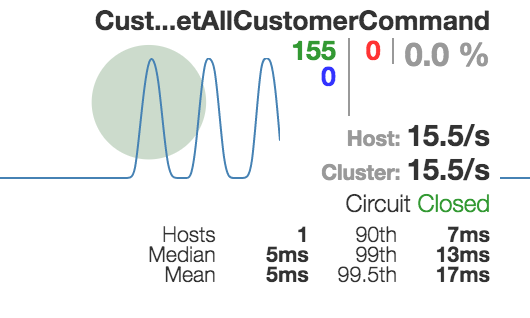
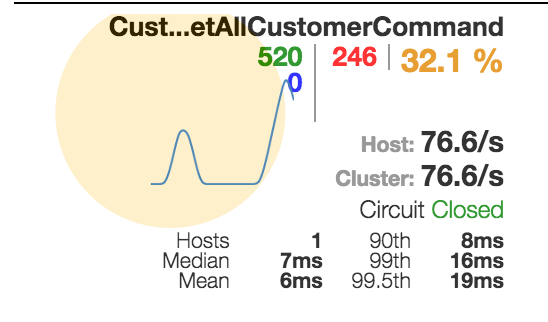

Getting started
Creating my first microservices¶
In this tutorial, we will create two micro-services, a backend service and a facade service calling the backend service.
We will see:
- How to create a new service
- How to generate a proxy class for calling another micro-service
- How to display monitoring with hystrix dashboard
- How to add fallback response for providing compensation when a service is down
Prerequisites¶
- node >= 6.0 see this link to install node on your machine.
- docker version >= 1.12. See this link to install docker.
- vulcain-cli You can install it with
npm install vulcain-cli -g
Creating the backend service¶
Creating a new microservice project is easy with vulcain-cli. The following command creates a new project from a template into the current directory. This template provides a sample customer management service.
vulcain new customers-service
This template is fully operational, you can go to the code, and test it directly in local mode
using http://localhost:8080/api with curl or postman.
Try some urls to see how vulcain works:
| url (prefixed with localhost:8080) | Http Verb | Description |
|---|---|---|
| /api/_servicedescription | GET | Show service description (metadata) |
| /api/_servicedependencies | GET | Show service dependencies (metadata) |
| /api | GET | Display all customers (this is the default behavior) |
| /api/customer.all | GET | Idem |
| /api/customer.create | POST | Create a customer (see below) |
| /api/customer.delete | POST | Delete a customer |
| /api/customer.update | POST | Update a customer |
Go to concepts to see more infos on the vulcain protocol.
Now we can publish this service in a local demo swarm cluster. From the project root folder type:
docker build -t customers-service:1.0 . vulcain run customers-service:1.0
Info
you can also use ./build.sh 1.0 to build the service.
vulcain runinitializes a swarm cluster if any, create a net-vulcain network and create a new docker service.
The service is now available with a new exposed port (30000 if this is the first service in your swarm cluster). This port is displayed when the vulcain run command ends.
Let's try to create some customers using this new port using the customer.create action.
E.g.
curl -XPOST localhost:30000/api/customer.create -d '{"firstName":"Albert", "lastName": "Einstein"}' -H 'Content-Type: application/json'
You can list all customers with /api/customer.all (or just /api).
Warning
By default, data is stored in memory and will be lost if you restart the container.
Creating the facade service¶
We will now create a new facade service exposing a customer with an additional fullName property.
Create a new service facade-service. In a new folder, type:
vulcain new facade-service
Then open the project and remove the src/api/samples folder to start with a new clean project.
The first thing to do is to create a model. A model (or schema) describes data manipulated by the service. It offers many capabilities:
- For input data, it is used to check and validate argument values (raising a 400 bad request error if any errors)
- For storing data, it can be used by the default provider to get some persistance information like key definition, uniqueness, collection name...
- For metadata description, it is used to display information (with /api/_servicedescription) usefull to code generation or other tools.
Create a new file src/api/model.ts and copy/paste the following code:
import { Property, Model } from "vulcain-corejs"; @Model() export class CustomerView { @Property({ type: 'string' }) fullName: string; @Property({ type: 'string' }) firstName: string; @Property({ type: 'string' }) lastName: string; }
This is a very basic model, it has the properties of a customer with an additional fullName property. Since this model will be used for output response only, no validation is added.
Now we will create an handler to query a customer view into a new file src/api/queryHandler.ts
import { QueryHandler, Query, AbstractQueryHandler, Command, ServiceDependency, AbstractServiceCommand, IHasFallbackCommand } from "vulcain-corejs"; import { CustomerView } from "./model"; import { CustomersService, Customer } from "./customersService10"; @QueryHandler({ scope: '?' }) export class MyQueryHandler extends AbstractQueryHandler { @Query({ description: "Get a list of customers", outputSchema: CustomerView }) async CustomerViewsAsync() { let customersService = new CustomersService(this.requestContext); let customers = await customersService.getAllCustomerAsync(); return customers.map(c => { return { firstName: c.firstName, lastName: c.lastName, fullName: c.firstName + ' ' + c.lastName }; }); } }
Info
For the moment, the editor displays errors. This is normal. We will see below how to remove the reference error on customersService10
Handler anatomy¶
- An handler is just a class with annoted methods. These annotations describe how the handler can be requested. There are 3 kinds of handler:
Query handler,Action handlerandEvent handler. See concepts - The
QueryHandlerannotation tells that the class exposes handler(s) for query (accessible with a GET http verb) and can define default configurations. In this case, the handler could be requested by any (anonymous) user thanks to thescope:'?'property. - The
Queryannotation is used to expose a method. Annotations have mandatory properties used to describe the service. The query will be accessible from/api/customersview(The name is inferred from the method name removing the Async suffix). - The handler code is like any traditional method with some specificities:
- It can take only one argument described by a model. This model will be validated before the method is called and can raise a Bad Request error in case of errors.
- The return value must be described by a model (can be the same as the input argument). This is used to describe the service.
- If any error occurs during processing the handler, a 500 http error will be sent to the client.
Now it's time to remove errors from your code.
You can note that the service uses a custom service class (CustomersService) to read all customers. This is a proxy class requesting our first service : customers-service.
But how can i create this proxy class ?
Communication between services¶
Thanks to the metadata description hability of any vulcain service, we can use dedicated tooling to generate code. Code generation uses template to generate a static class with typed method sending request that are high tolerance, monitored and vulcain compatible.
Vulcain compatible means context propagation : security context, global correlation id, tenant information...
To generate the proxy class, we need some information:
- Address of the target service. In our case, localhost:30000
- A template to use, by default this is microServiceProxy (for generating vulcain proxy). The other template available is angularServiceProxy to generate proxy class for angular application.
- The folder where the generated file will be saved. Default is the current folder.
To generate the class, type the following code from the application root folder (Change the port number if necessary)
vulcain generate --address localhost:30000 --folder src/api
The proxy class encapsulates all requests into hystrix commands providing circuit breaker, timeout, bulkhead and monitoring.
Now you can compile and test the service locally with:
curl http://localhost:8080/api/customerviews
Result depends of how many customers you created before, but note the standardized response format.
Monitoring command request with hystrix dashboard¶
To enable hystrix monitoring, just set the variable enableHystrixStream to true in startup.ts.
To visualize metrics, we need to start hystrix dashboard with the following command:
docker service create --network net-vulcain -p 9999:9002 --name hystrix-dashboard mlabouardy/hystrix-dashboard:latest
Then open the dashboard on http://localhost:9999/hyxtrix, set the service endpoint with http://<host ip>:8080/hystrix.stream and click on Monitor Stream.
You can test monitoring by calling many requests. For example with :
ab -n 200 http://localhost:8080/api/customerviews
You must see something like this:

Info
Note how the service ip address changes depending on where you call it. To test the service, you can use localhost but since hystrix is running within a container you must provide the host ip.
If the service were deployed as a swarm service, you can access it with a standardized DNS name corresponding to the service name + its version (removing all special characters).
For example, if you deploy the service with vulcain run service-facade:1.0, you can monitor it with the address http://servicefacade10:8080/hystrix.stream.
Failure compensation¶
Calling microservice over http is not a long quiet stream, many errors can occur and you must be prepared for this. For this situation, vulcain uses an hystrix implementation of command. You can configure the command behavior with annotation. For example, the following command has a 1500ms timeout protecting from long requests.
@Command({ executionTimeoutInMilliseconds: 1500 }) export class CustomersServiceGetAllCustomerCommand extends AbstractServiceCommand { }
This is the microservice philosophy : Service can failed but quickly.
For most scenarii, if the request failed it's better to send a default response than an error message. This is the role of the compensation (fallBack) method.
Try a request failure by removing the backend service with docker service rm customersservice10 and by requesting again the facade service. Due to the default 1500ms timeout, errors will occur quickly.
You can see it in hystrix dashboard.

Before adding a compensation, we need to understand how the service proxy class works. This class provides a method for each endpoints (handlers) of the target service. Every time a call is made to an endpoint, a (hystrix) command is created by the proxy to encapsulate this call. By default, all calls of the same proxy use the same command named <service name>Command.
If you need to customize a call, you need to customize a command but only for this specific call. To do that, the proxy class will check for every call if a specific command exists for this call otherwise it will use the default command. A specific command is identified by a name like <service name><method name>Command.
Since we will customize a call to getAllCustomerAsync of the proxy class named CustomersService we need to create a new command named CustomersServiceGetAllCustomer (Async is always removed for naming).
To add compensation we need to provide a fallback method returning the default value.
You can now create a new file in src/api/ containing the new command.
import { ServiceDependency, Command, AbstractServiceCommand, IHasFallbackCommand } from 'vulcain-corejs'; import { Customer } from './customersService10'; @Command({ executionTimeoutInMilliseconds: 1500 }) @ServiceDependency('customers-service', '1.0', 'http://localhost:30000/api/_servicedescription') export class CustomersServiceGetAllCustomerCommand extends AbstractServiceCommand implements IHasFallbackCommand<Customer[]> { async fallbackAsync(): Promise<Customer[]> { return [{ firstName: "John", lastName: "Lennon" }]; } }
Annotations are copied from the default generated command. You can see how to set timeout delay and how to define informations used for service description.
Fallback method is called on every error during the request including timeout.
Now if you request the facade service, the compensation response will be returned.